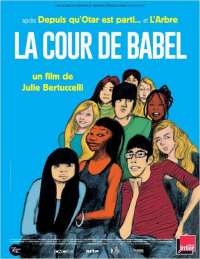

Pendant un an, Julie Bertuccelli a posé sa caméra dans une classe d’accueil de collège. Ce sont des enfants qui arrivent de tous horizons et qui apprennent dans cette classe à parler français avant d’être progressivement intégrés dans les cours traditionnels.
Bien plus qu’un simple documentaire, La Cour de Babel est une formidable leçon de vie. Sans doute (trop) idéaliste, ce film est en tout cas très beau et extrêmement touchant. Il redonne foi en une certaine idée de la France, ce qui, en ce moment, n’est pas la chose la plus inutile…

 Ben est un trentenaire un peu immature sur les bords s’apprête à se marier avec Juliette. Quinze jours avant la cérémonie, voilà que débarque en France Vanessa, le fantasme absolu de Ben lorsqu’il était collégien. Et cette dernière est bien décidée à reprendre contact avec lui…
Ben est un trentenaire un peu immature sur les bords s’apprête à se marier avec Juliette. Quinze jours avant la cérémonie, voilà que débarque en France Vanessa, le fantasme absolu de Ben lorsqu’il était collégien. Et cette dernière est bien décidée à reprendre contact avec lui…
 Theodore vient de vivre une rupture très compliquée avec son ancienne femme. Il a beaucoup de mal à s’en remettre et s’il est très doué professionnellement (il écrit des lettres pour des clients), sa vie personnelle est plutôt morne. Mais tout va changer lorsqu’il va changer de système d’exploitation de l’ordinateur qui l’assiste dans sa vie de tous les jours…
Theodore vient de vivre une rupture très compliquée avec son ancienne femme. Il a beaucoup de mal à s’en remettre et s’il est très doué professionnellement (il écrit des lettres pour des clients), sa vie personnelle est plutôt morne. Mais tout va changer lorsqu’il va changer de système d’exploitation de l’ordinateur qui l’assiste dans sa vie de tous les jours…
 Daisy est une jeune Américaine qui se rend pour l’été en Angleterre, chez ses cousins alors que la menace d’une guerre mondiale gronde. Là-bas, elle a du mal à se faire à une vie très différente de la sienne même si sa rencontre avec Eddie va la changer. Tout comme le déclenchement officiel de cette guerre…
Daisy est une jeune Américaine qui se rend pour l’été en Angleterre, chez ses cousins alors que la menace d’une guerre mondiale gronde. Là-bas, elle a du mal à se faire à une vie très différente de la sienne même si sa rencontre avec Eddie va la changer. Tout comme le déclenchement officiel de cette guerre…